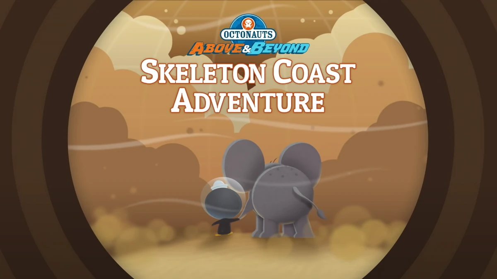

The Octonauts and the Skeleton Coast Adventure
"Octonauts: Above & Beyond" is a TV series that premiered on September 7, 2021.
It was directed by Darragh O'Connell and produced by Silvergate Media, along with
other companies like CGCG and Mainframe Studios."
Cited

The Octonauts shipwreck on a desert coast and meet water scientist monkey Paani,
who leads them to thirsty animals in need of major hydration
The Octonauts and the Land of Fire and Ice
"Octonauts: Above & Beyond" is a TV series that premiered on September 7, 2021.
It was directed by Darragh O'Connell and produced by Silvergate Media, along with
other companies like CGCG and Mainframe Studios."
Cited

Dashi and Peso round up a reindeer herd when lava causes floods in Iceland.
The Octonauts and the Wild Windstorms
"Octonauts: Above & Beyond" is a TV series that premiered on September 7, 2021.
It was directed by Darragh O'Connell and produced by Silvergate Media, along with
other companies like CGCG and Mainframe Studios."
Cited

Dashi whips through wild winds in Antarctica to rescue Calico Jack.